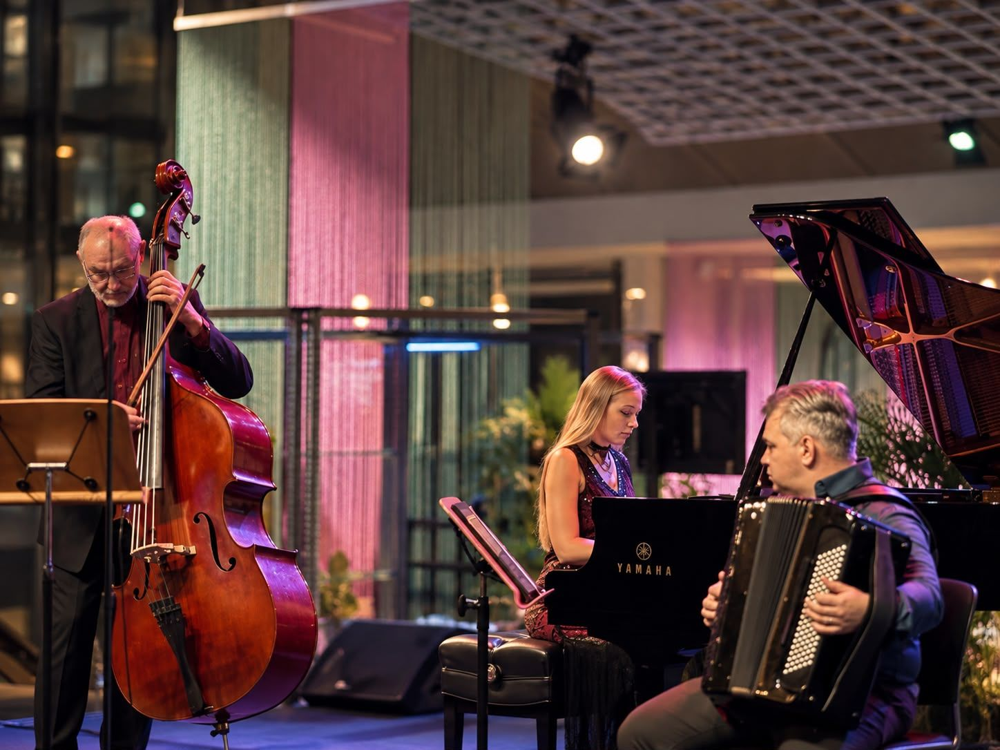
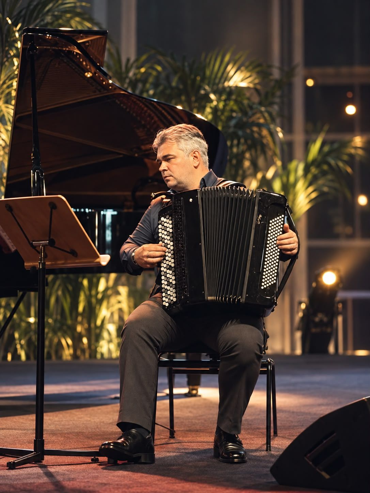

Accordion & double bass · Singapore
Two instruments that make a room go quiet.
A&G Academy is the duo of accordionist Aleksandr Farseev and Guennadi Mouzyka, Principal Bass of the Singapore Symphony Orchestra. Russian folk, French musette and Argentine tango — played live at your event, taught in our studio, and sold as instruments you can actually grow into.

What we do
Perform. Teach. Equip.
Live performance
Weddings, corporate evenings, gallery openings, National Day receptions. Duo or trio, acoustic or amplified, 30 to 90 minutes, repertoire built around your guests.
Check a dateLessons
Accordion and bayan with Aleksandr; double bass and chamber coaching with Guennadi. From absolute beginner at seven or seventy, through to conservatory audition preparation.
See lessonsAccordion shop
Buy an accordion from us — fourteen accordions in stock in Singapore, S$1,556 to S$4,677, the same ones we teach on. Pick the bass side on the card and check out online.
Shop accordions →Our music
Watch before you book.
One trio programme and two solo voices. Nothing staged for a promo — these are performances as they happened.





The score library
740+ scores, free, in seven languages.
The Accordion Score Library stays exactly where it is — a free, graded, multilingual catalogue for accordion and bayan players anywhere. Grade 1 through Virtuoso, searchable by composer and genre.
Open the libraryWhy it's free.
Most people who want to try the accordion never meet one. The library removes the second obstacle after the instrument itself: something worth playing on it, at the right level, in a language you read.
Аккордеон & контрабас · Сингапур
Два инструмента, от которых зал затихает.
A&G Academy — это дуэт аккордеониста Александра Фарсеева и Геннадия Музыки, концертмейстера группы контрабасов Singapore Symphony Orchestra. Русские народные, французский мюзет и аргентинское танго — вживую на вашем событии, в нашем классе на уроках и в виде инструментов, из которых вы не вырастете за год.
Чем мы занимаемся
Играем. Учим. Снаряжаем.
Живые выступления
Свадьбы, корпоративные вечера, открытия выставок, приёмы на Национальный день. Дуэт или трио, акустика или подзвучка, от 30 до 90 минут, программа под ваших гостей.
Узнать про датуУроки
Аккордеон и баян — с Александром; контрабас и камерный ансамбль — с Геннадием. С полного нуля, в семь лет или в семьдесят, и до подготовки к прослушиванию в консерваторию.
Про урокиМагазин аккордеонов
Купите аккордеон у нас — восемь готовых инструментов в Сингапуре, от S$1,617 до S$4,677, ровно те, на которых мы сами занимаемся. Выберите количество басов на карточке и оплатите онлайн.
Выбрать аккордеон →Наша музыка
Послушайте, прежде чем приглашать.
Одна программа трио и два сольных голоса. Ничего не снято специально для промо — это концерты как они были.
Библиотека нот
740+ нот, бесплатно, на семи языках.
Accordion Score Library остаётся ровно там, где была, — бесплатный каталог нот для аккордеона и баяна с разбивкой по уровням, для музыкантов в любой точке мира. От 1 класса до уровня «виртуоз», с поиском по композитору и жанру.
Открыть библиотекуПочему бесплатно.
Большинство тех, кому хочется попробовать аккордеон, никогда не держали его в руках. Библиотека убирает второе препятствие после самого инструмента: то, что стоит на нём сыграть, нужной сложности и на языке, который вы читаете.
手风琴 & 低音提琴 · 新加坡
两件能让整个厅安静下来的乐器。
A&G Academy 是手风琴家亚历山大·法尔谢耶夫（Aleksandr Farseev）与新加坡交响乐团低音提琴首席根纳季·穆济卡（Guennadi Mouzyka）组成的二重奏。俄罗斯民间音乐、法国 musette、阿根廷探戈——在你的活动上现场演奏，在我们的琴房里教出来，也作为乐器卖给你，而且是几年内都不会嫌小的那一类。
我们的音乐
先看，再决定请不请我们。
一套三重奏节目，两个独奏的声音。没有一段是为了宣传摆拍的——都是演出当时的样子。
曲谱库
740+ 份曲谱，免费，七种语言。
Accordion Score Library 会一直留在原处——一个免费、分级、多语言的手风琴与巴扬曲谱目录，面向世界各地的琴友。从第 1 级到演奏家级，可按作曲家和体裁检索。
打开曲谱库为什么是免费的。
大多数想试试手风琴的人，一辈子都没真正碰到过一台。琴本身是第一道坎，第二道坎是：有一首值得弹的曲子，难度刚好，而且用你读得懂的语言写着。曲谱库拿掉的就是第二道。
アコーディオン & コントラバス · シンガポール
部屋が静まりかえる、二つの楽器。
A&G Academy は、アコーディオン奏者アレクサンドル・ファルセーエフ（Aleksandr Farseev）と、シンガポール交響楽団首席コントラバス奏者ゲンナジー・ムジカ（Guennadi Mouzyka）によるデュオです。ロシア民謡、フランスのミュゼット、アルゼンチン・タンゴ——あなたの会場で生演奏し、教室で教え、長く付き合える楽器としてお売りしています。
私たちの仕事
演奏する。教える。楽器を届ける。
生演奏
結婚式、企業の夜のパーティー、ギャラリーのオープニング、ナショナルデーのレセプション。デュオでもトリオでも、生音でも音響つきでも、30分から90分まで。曲目はお客さまに合わせて組みます。
日程を確認するアコーディオン販売
楽器は私たちからどうぞ——シンガポールに在庫のあるピアノ式8機種、S$1,617 から S$4,677 まで。どれもレッスンで使っているものです。カード上で左手のベース数を選び、そのままオンラインで購入できます。
アコーディオンを見る →私たちの音楽
頼む前に、観てください。
トリオのプログラムがひとつと、ソロがふたり。宣伝のために撮った映像ではありません。どれも本番そのままです。
楽譜ライブラリー
740点以上の楽譜を、7か国語で、無料で。
Accordion Score Library はこれまでどおりの場所にあります——世界中のアコーディオンとバヤンの奏者のための、無料で、難易度別、多言語のカタログです。グレード1からヴィルトゥオーゾまで、作曲家やジャンルから探せます。
ライブラリーを開くなぜ無料なのか。
アコーディオンを弾いてみたいと思う人の多くは、実物に出会えないまま終わります。このライブラリーは、楽器そのものの次にある二つ目の壁を取り除きます。自分のレベルに合っていて、読める言語で書かれた、弾く価値のある一曲です。
아코디언 & 더블베이스 · 싱가포르
방 안을 조용하게 만드는 두 악기.
A&G Academy는 아코디언 연주자 알렉산드르 파르세예프(Aleksandr Farseev)와 싱가포르 심포니 오케스트라 수석 더블베이스 겐나디 무지카(Guennadi Mouzyka)의 듀오입니다. 러시아 민속음악, 프랑스 뮈제트, 아르헨티나 탱고를 여러분의 행사에서 직접 연주하고, 저희 스튜디오에서 가르치며, 오래 곁에 둘 수 있는 악기로 판매합니다.
저희가 하는 일
연주합니다. 가르칩니다. 갖춰 드립니다.
라이브 공연
결혼식, 기업 행사의 저녁, 갤러리 오프닝, 내셔널 데이 리셉션. 듀오 또는 트리오로, 어쿠스틱이나 앰프를 써서 30분에서 90분까지, 손님들에 맞춰 레퍼토리를 짭니다.
날짜 확인하기아코디언 숍
아코디언을 저희에게 사십시오 — 싱가포르에 재고가 있는 피아노 아코디언 여덟 대, S$1,617부터 S$4,677까지, 저희가 레슨에 쓰는 바로 그 악기들입니다. 카드에서 베이스 단수를 고르고 온라인으로 결제하세요.
아코디언 보러 가기 →저희 음악
섭외하기 전에 먼저 들어 보세요.
트리오 프로그램 하나와 솔로 두 사람. 홍보용으로 연출한 것은 하나도 없습니다 — 그날 있었던 그대로의 연주입니다.
악보 라이브러리
740점이 넘는 악보를, 무료로, 일곱 개 언어로.
Accordion Score Library는 있던 자리에 그대로 있습니다 — 세계 어디에 있든 아코디언과 바얀 연주자를 위한 무료 난이도별 다국어 목록입니다. 그레이드 1부터 비르투오소까지, 작곡가와 장르로 찾아보실 수 있습니다.
라이브러리 열기무료로 두는 이유.
아코디언을 해 보고 싶은 사람 대부분은 악기를 한 번도 만나 보지 못합니다. 이 라이브러리는 악기 다음에 오는 두 번째 장벽을 치웁니다. 연주할 만한 곡을, 알맞은 난이도로, 읽을 수 있는 언어로.
Akordion & double bass · Singapura
Dua alat muzik yang menyenyapkan seisi ruang.
A&G Academy ialah duo pemain akordion Aleksandr Farseev dan Guennadi Mouzyka, Ketua Bes Orkestra Simfoni Singapura. Lagu rakyat Rusia, musette Perancis dan tango Argentina — dimainkan secara langsung di majlis anda, diajar di studio kami, dan dijual sebagai alat muzik yang benar-benar boleh anda kembangkan bersama.
Apa yang kami buat
Bermain. Mengajar. Melengkapkan.
Persembahan langsung
Majlis perkahwinan, malam korporat, pembukaan galeri, resepsi Hari Kebangsaan. Duo atau trio, akustik atau beramplifier, 30 hingga 90 minit, repertoir dibina khas untuk tetamu anda.
Semak tarikhKelas
Akordion dan bayan bersama Aleksandr; double bass dan bimbingan muzik kamar bersama Guennadi. Daripada pemula benar-benar baharu pada usia tujuh atau tujuh puluh, hingga persediaan ujian masuk konservatori.
Lihat kelasKedai akordion
Beli akordion daripada kami — lapan akordion piano dalam stok di Singapura, S$1,617 hingga S$4,677, alat yang sama kami gunakan untuk mengajar. Pilih bahagian bass pada kad dan bayar dalam talian.
Beli akordion →Muzik kami
Tonton dahulu sebelum menempah.
Satu program trio dan dua suara solo. Tiada apa-apa yang dilakonkan untuk promosi — ini persembahan sebagaimana ia berlaku.
Perpustakaan skor
740+ skor, percuma, dalam tujuh bahasa.
Accordion Score Library kekal di tempatnya — katalog percuma, bergred dan berbilang bahasa untuk pemain akordion dan bayan di mana-mana sahaja. Gred 1 hingga Virtuoso, boleh dicari mengikut komposer dan genre.
Buka perpustakaanKenapa ia percuma.
Kebanyakan orang yang ingin mencuba akordion tidak pernah bertemu satu pun. Perpustakaan ini menyingkirkan halangan kedua selepas alat muzik itu sendiri: sesuatu yang berbaloi dimainkan, pada tahap yang betul, dalam bahasa yang anda baca.
அக்கார்டியன் & டபுள் பேஸ் · சிங்கப்பூர்
ஓர் அரங்கை அமைதியாக்கும் இரண்டு கருவிகள்.
A&G Academy என்பது அக்கார்டியன் கலைஞர் அலெக்சாந்தர் ஃபார்சேவ் (Aleksandr Farseev), சிங்கப்பூர் சிம்பொனி இசைக்குழுவின் முதன்மை பேஸ் கென்னாடி முஸீகா (Guennadi Mouzyka) ஆகியோரின் இரட்டையர் குழு. ரஷ்ய நாட்டுப்புற இசை, பிரெஞ்சு முஸெட், அர்ஜென்டீன டாங்கோ — உங்கள் நிகழ்ச்சியில் நேரில் வாசிக்கிறோம், எங்கள் ஸ்டூடியோவில் கற்பிக்கிறோம், நீண்ட காலம் உங்களோடு வளரக்கூடிய கருவிகளாக விற்கிறோம்.
நாங்கள் செய்வது
வாசிக்கிறோம். கற்பிக்கிறோம். கருவி தருகிறோம்.
நேரடி இசை நிகழ்ச்சி
திருமணங்கள், நிறுவன இரவு நிகழ்வுகள், கலைக்கூடத் திறப்புகள், தேசிய தின வரவேற்புகள். இரட்டையராகவோ மூவராகவோ, ஒலிபெருக்கியுடன் அல்லது இல்லாமல், 30 முதல் 90 நிமிடங்கள் — உங்கள் விருந்தினர்களை மனதில் வைத்துப் பாடல்கள் தேர்வு செய்யப்படும்.
தேதியைப் பார்க்கபாடங்கள்
அக்கார்டியனும் பயானும் Aleksandr-உடன்; டபுள் பேஸும் சேம்பர் இசைப் பயிற்சியும் Guennadi-உடன். ஏழு வயதோ எழுபது வயதோ — முற்றிலும் புதியவர் முதல் இசைக்கல்லூரித் தேர்வுக்குத் தயாராகுபவர் வரை.
பாடங்களைப் பார்க்கஅக்கார்டியன் கடை
எங்களிடமிருந்தே அக்கார்டியன் வாங்குங்கள் — சிங்கப்பூரில் இருப்பில் எட்டு பியானோ அக்கார்டியன்கள், S$1,617 முதல் S$4,677 வரை; நாங்கள் கற்பிக்கும் அதே கருவிகள். அட்டையில் பேஸ் பக்கத்தைத் தேர்ந்தெடுத்து இணையத்திலேயே வாங்கலாம்.
அக்கார்டியன் வாங்க →எங்கள் இசை
முன்பதிவுக்கு முன் கேட்டுப் பாருங்கள்.
ஒரு மூவர் நிகழ்ச்சி, இரண்டு தனிக் குரல்கள். விளம்பரத்துக்காக ஏற்பாடு செய்யப்பட்டவை அல்ல — நடந்தது நடந்தபடியே.
இசைக்குறிப்பு நூலகம்
740+ இசைக்குறிப்புகள், இலவசம், ஏழு மொழிகளில்.
Accordion Score Library இருந்த இடத்திலேயே தொடரும் — உலகின் எந்த மூலையிலும் உள்ள அக்கார்டியன், பயான் கலைஞர்களுக்கான இலவச, நிலைவாரியான, பல்மொழிப் பட்டியல். கிரேடு 1 முதல் Virtuoso வரை, இசையமைப்பாளர் மற்றும் வகை வாரியாகத் தேடலாம்.
நூலகத்தைத் திறக்கஏன் இது இலவசம்.
அக்கார்டியனை முயற்சிக்க விரும்பும் பெரும்பாலானோர் ஒரு அக்கார்டியனையே நேரில் பார்த்ததில்லை. கருவிக்கு அடுத்த இரண்டாவது தடையை இந்த நூலகம் நீக்குகிறது: வாசிக்கத் தகுந்த ஒன்று, சரியான நிலையில், நீங்கள் படிக்கும் மொழியில்.